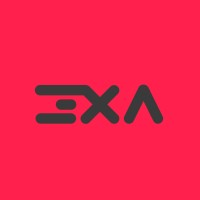

Sobre Mí
¡Hola! Soy Francisco Cánovas Martínez, un desarrollador web en formación. Me encanta aprender nuevas tecnologías y enfrentar nuevos desafíos.
Actualmente estoy realizando prácticas profesionales, donde estoy adquiriendo experiencia práctica en proyectos reales y colaborando con equipos de desarrollo.
Mi objetivo es crecer como desarrollador y contribuir a crear soluciones web útiles para los usuarios.
Email: canovasmartinezfrancisco@gmail.com
Teléfono: +34 644 84 36 69
Ubicación: Región de Murcia, España
Educación
IES Ribera de los Molinos
Técnico Superior en Desarrollo de Aplicaciones Web
sept. 2024 – jun. 2026
Experiencia

3XA Design
Formación de prácticas de empresa
Agencia creativa especializada en diseño gráfico, branding y desarrollo web para empresas y startups.
mar. 2026 - may. 2026 · 3 meses
En remoto
Habilidades Técnicas
Lenguajes & Frameworks
- JavaScript
- HTML
- CSS
- PHP
- Node.js
- React
- Angular
- Laravel
- Spring (Java)
- REST APIs
Bases de Datos
- MongoDB
- MySQL
Diseño & Tools
- Figma
- Canva
- Git & GitHub
- Docker
Proyectos
GameWasters
GameWasters es una aplicación web que proporciona análisis del perfil de jugadores de Steam y recomendaciones personalizadas de juegos basadas en los patrones de juego y preferencias de género.
Ver proyectoActualmente estoy desarrollando más proyectos personales para seguir mejorando mis habilidades como desarrollador.